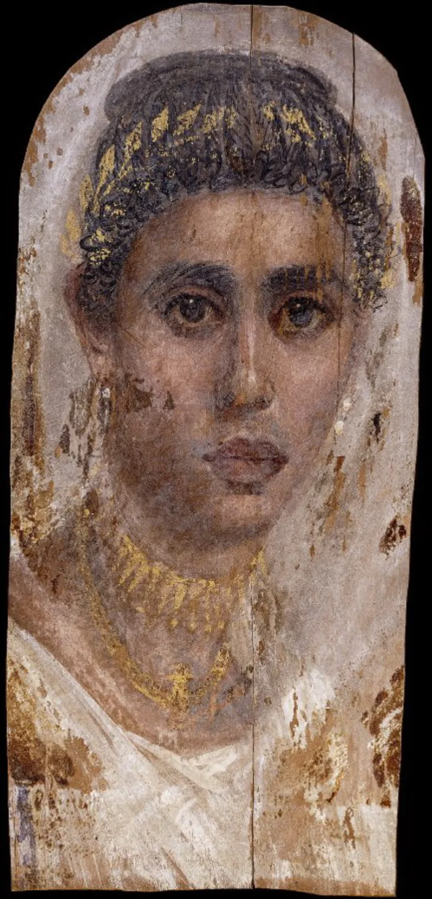
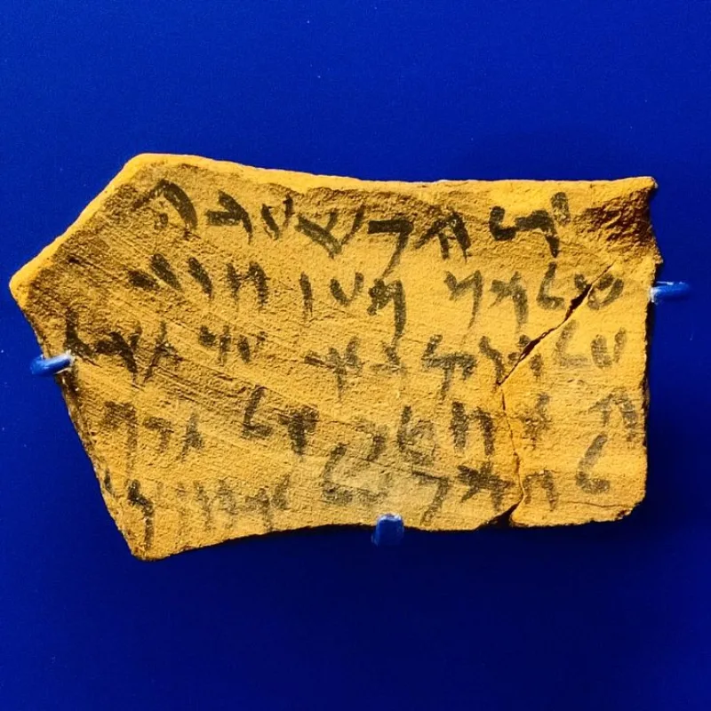
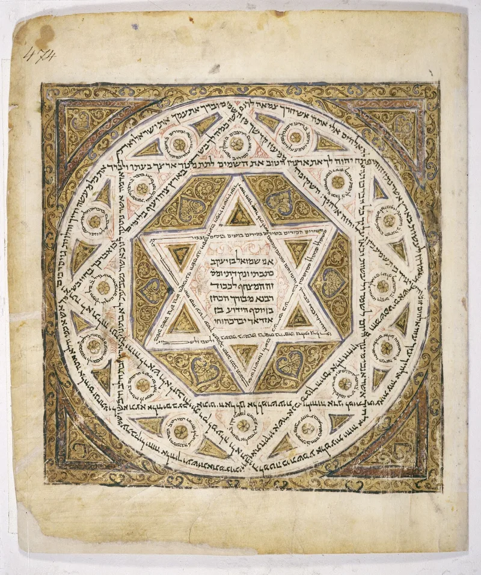

The text settles it — but concede the grievance first, or nothing will be heard.
It goes further than saying Black, Hispanic and Native Americans are Israel. It says they are the only Israel.
Everyone else is a gentile — and the people we call Jews today are fakes.
Revelation 2:9, where Christ speaks of "them which say they are Jews, and are not, but are the synagogue of Satan." If no counterfeit existed, they ask, why would he warn about one?
It is a letter to one church, in one city. Smyrna.
It is about a fight going on right there, between that church and a synagogue that opposed it. The same letter praises the church for holding on.
And the same book speaks well of faithful Israel elsewhere.
Ezra 2 and Nehemiah 7 list the families who came back from Babylon, by name. Judah can be traced right through.
There is no gap where one people could be swapped for another without anyone noticing.
This one has a clear answer from the text. Revelation 2:9 is the best text they have.
It deserves a real answer, not a brush-off. But one letter to one city will not carry a claim about every Jewish person alive.
"Who is Revelation 2:9 written to? Let's read the whole letter to Smyrna."



Christ himself warned of people who say they are Jews and are not.
The camps ground the exclusivity in Revelation 2:9 and 3:9. There Christ speaks of 'them which say they are Jews, and are not, but are the synagogue of Satan.' If no counterfeit existed, they ask, why would the risen Christ warn of one?
They add that Israel was an African-adjacent people. Moses is mistaken for an Egyptian (Exodus 2:19). The holy family flees into Africa (Matthew 2:13-15). Jeremiah asks 'can the Ethiopian change his skin' (Jeremiah 13:23), in a context they read as aimed at Israel. Song of Solomon 1:5-6 says 'I am black, but comely.'
Now combine two things. A warned-of counterfeit, and a people who look nothing like the description and who hold the land while the cursed wander. The conclusion, they argue, follows.
The text settles it, but Revelation 2:9 deserves a real answer first.
Revelation 2:9 is the strongest text they have. It deserves a real answer, not a brush-off. But look at its setting. It is a local fight in Smyrna, between the church there and a synagogue that opposed it. The same letter form is sent to seven named first-century churches. It cannot carry a swap of one whole people for another, across two thousand years.
The skin-tone texts do prove something true, and worth granting. Ancient Israelites were a Levantine people, not a European one. But Levantine is not West African.
The hard problem is Anna and Paul. A tribeswoman of Asher in Jerusalem. An apostle from Benjamin. Tribal Israel was still there to be found in the first century. No camp has explained how the people Paul called his kinsmen stopped being Israel, with no Bible writer noticing.